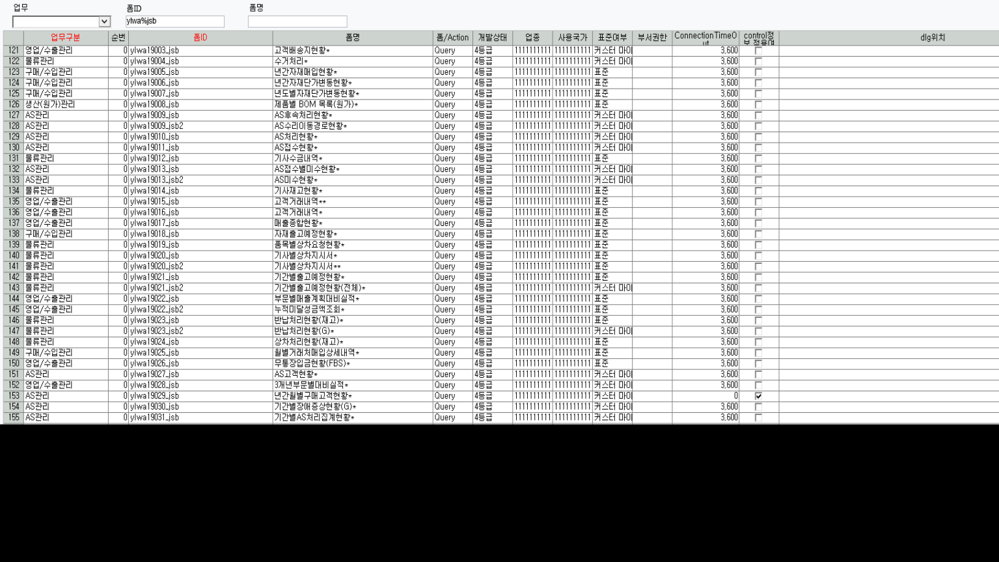

조회모음 신규
- 폼등록

- 조회모음등록

-
프로그램별 사용자등록 - 관리자
-
메뉴등록 - 어차피 권한 있는 사람한테 밖에 안보임
-
sp 작성 SCTQry_ylwa19303_jsb
-
sp 작성 시 맨 위에 DELETE FROM TCTQrySheet WHERE pgm_id = 'ylwa19303_jsb' 구문 추가하기 (그래야 다음 수정 때 편리함)
-
total 행 추가 시 컬럼 갯수 맞춰야함 / 컬럼 갯수 + @꽃분홍1, @하양
-
소수점은 sp에서 설정
-
숨기는 기능 ? => 그냥 컬럼길이 0 으로 하거나 아예 삭제
-
일자는 그냥 substring으로 하자
-